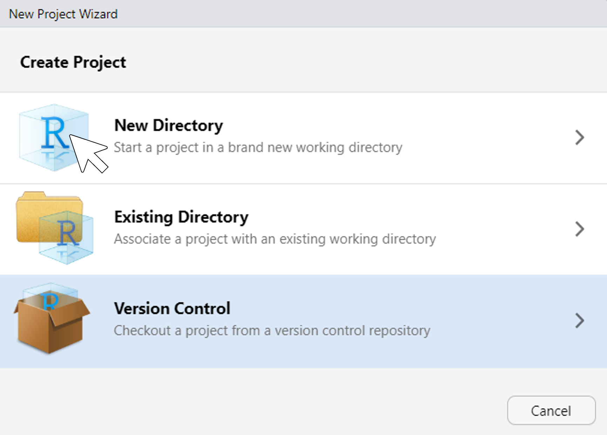
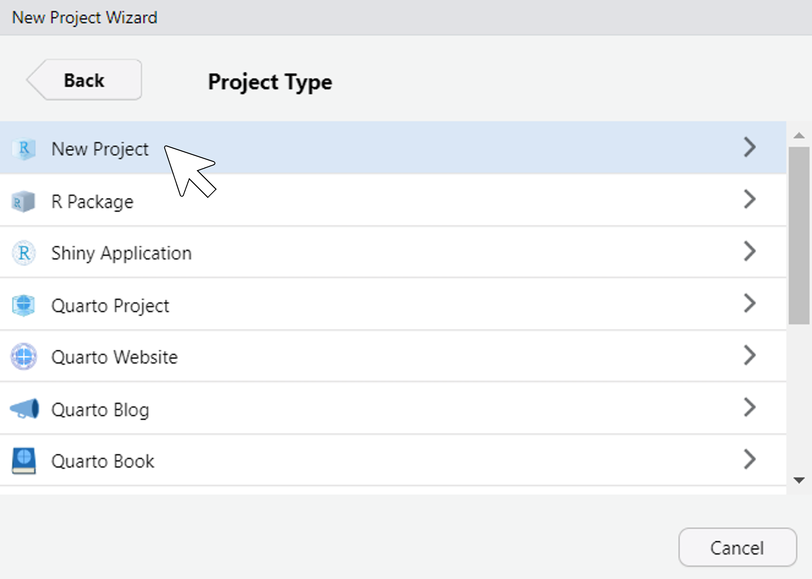
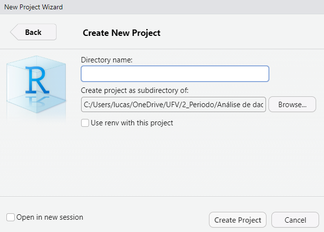
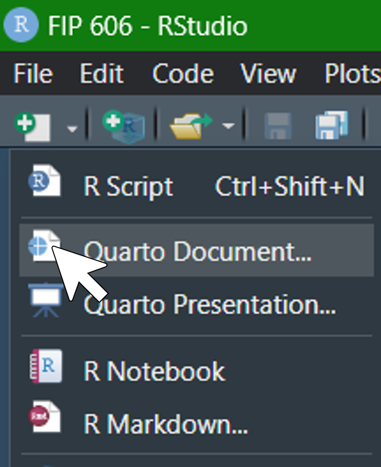
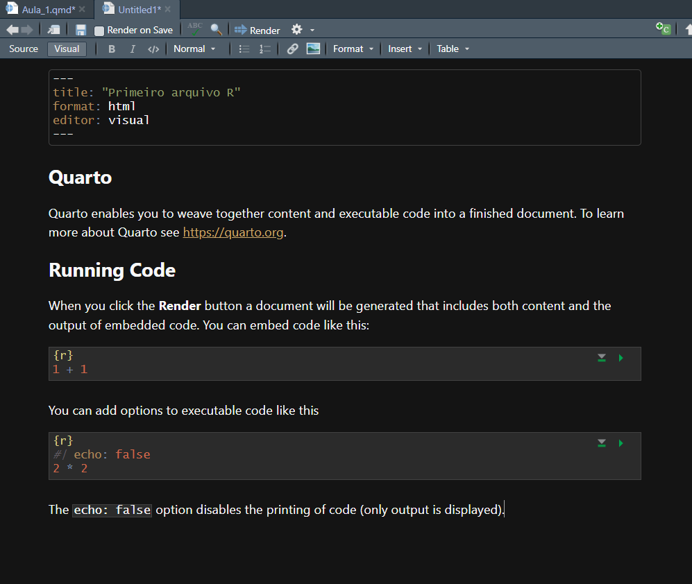

2 + 2 # adição[1] 42 - 2 # subtração[1] 02 / 2 # divisão[1] 12 * 2 # multiplicação[1] 42 ^ 2 # exponenciação[1] 42 ^ (1/2) # raiz quadrada[1] 1.414214Antes de começarmos a desenvolver códigos com foco em análise de dados, vamos iniciar criando um projeto, em R, para que nossos arquivos fiquem salvos e organizados. Para isso, após a instalação dos Softwares R e RStudio, abra o RStudio e siga os passos:
Conforme a figura, cliqle no botão “Create a project”:

Na janela que se abrir, clique na opção “New Directory”:

Na nova janela clique em “New Project”

Defina o diretório e clique em ’Creat Project”. Pronto! Seu diretório foi criado. Agora, toda vez que for desenvolver algum código, de um trabalho espefico, salve nesta pasta.

Agora, vá ao diretório que salvou o projeto e clique no arquivo “.Rproj”. Faça isso toda vez que for trabalhar nele. Ao clicar no arquivo do projeto, o ambiente do RStudio será aberto, clique em “New File” > “Quarto Document”. Defina título e autor e clique em “Create”.

Você acabou de criar um arquivo .qmd e em sua janela terá algo assim:

Como se pode perceber, esse tipo de arquivo permite alternar entre escrita e comandos. Essas caixas de comando são chamadas de chuncks e são nelas que inserimos os códigos de interesse. Para criar um novo código, use o atalho ctrl + alt + i.
Podemos fazer uma analogia do R como uma calculadora inteligente. Para isso, basta que indiquemos por meio de comandos o que precisa ser feito. Vale resaltar que, se você escrever um comando errado, no melhor dos casos retornará uma mensagem de erro. No entanto, se o código rodar, mas, com um erro que você não percebeu, a resposta estará errada, comprometendo suas decisões. Então, tenham atenção ao digitar comandos. Experimente realizar alguma operações matemáticas:
2 + 2 # adição[1] 42 - 2 # subtração[1] 02 / 2 # divisão[1] 12 * 2 # multiplicação[1] 42 ^ 2 # exponenciação[1] 42 ^ (1/2) # raiz quadrada[1] 1.414214Observe o resultado das operações. Isso é um exemplo simples e operações mais complexas podem ser realizadas.
Até então, o que foi apresentado, de operações matemáticas, uma calculadora simples faz. Vamos agora criar abjetos, como vetores e data.frames.
a <- 2
b = 2O sinal de atribuição “<-” ou “=” utilizado com frequência serve para associar valores a objetos. Como no exemplo acima, o objeto “a” agora vale 2, ou seja, toda vez que chamar este objeto numa operação matemática, será realizado o cálculo com o valor que ele carrega.
a + b[1] 4No entanto, o objeto criado poderia conter mais que um único valor. Vamos criar agora um vetor:
b <- c(1, 2, 3, 4, 5)
b[1] 1 2 3 4 5ATENÇÂO: Observe que agora o objeto “b”, antes igual a 2, agora contém os valores inteiros de 1 a 5. Isso acontece porque o valor do objeto “b” foi sobrescrito pelo novo vetor. Dessa forma, b = 2, não existe mais.
Operações matemáticas podem ser feitas com esse objeto. Por exemplo, vamos realizar uma operação de multiplicação entre os objetos criados.
a * b[1] 2 4 6 8 10Nesse caso, observe que cada um dos valores contidos em “b” foi multiplicado pelo valor de “a”. Esse resultado não foi salvo na memória do R, para isso basta adotar o sinal de atribuição.
d <- a * b
d[1] 2 4 6 8 10Agora, toda vez que chamar pela variável “d”, retornará o valor da multiplicação.
Um vetor também pode carregar informações do tipo caracter:
nomes <- c("Iago", "Klaus", "Mariana", "David", "Gabriel")
nomes[1] "Iago" "Klaus" "Mariana" "David" "Gabriel"Data frames são muito úteis para organizar dados, uma vez que estes permitem que as colunas contenham, por exemplo, valores numéricos ou lógicos ou de caracteres.
Utilizando a função data.frame(), inserindo os objetos criados, separado-os por vírgula, e atribuindo a um objeto chamado df.
df <- data.frame(nomes, b, d)
df nomes b d
1 Iago 1 2
2 Klaus 2 4
3 Mariana 3 6
4 David 4 8
5 Gabriel 5 10Em análise de dados, esse tipo de estrutura é muito utilizado e vamos utilizar bastante no decorrer dessa disciplina de análise.
As vezes existem algumas funções de outros pacotes que não são carregadas automaticamente quando se inicia o R. Nesses casos, é preciso carregar o pacote que contém a função de interesse, para isso usamos a função library().
library(ggplot2) # Carregando funções do pacote ggplot2Pode acontecer que a função gere um erro no carregamento, provavelmente porque o pacote ainda não foi instalado. Para instalar um pacote basta usar a fução install.packages(). Após a instalação, é preciso carregar o novo pacote utilizando a função library().
# install.packages()Quando tiver dúvida sobre como usar alguma função, execute:
?data.frame # ajuda para a função starting httpd help server ... doneUma janela com informações sobe a função será aberta.